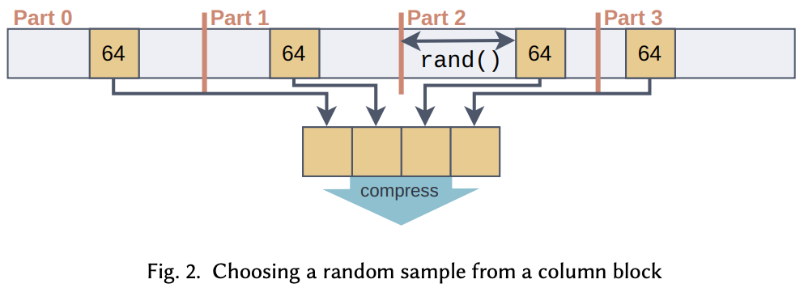
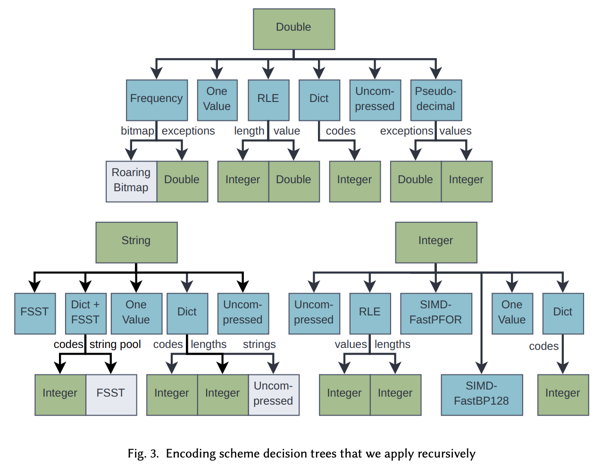
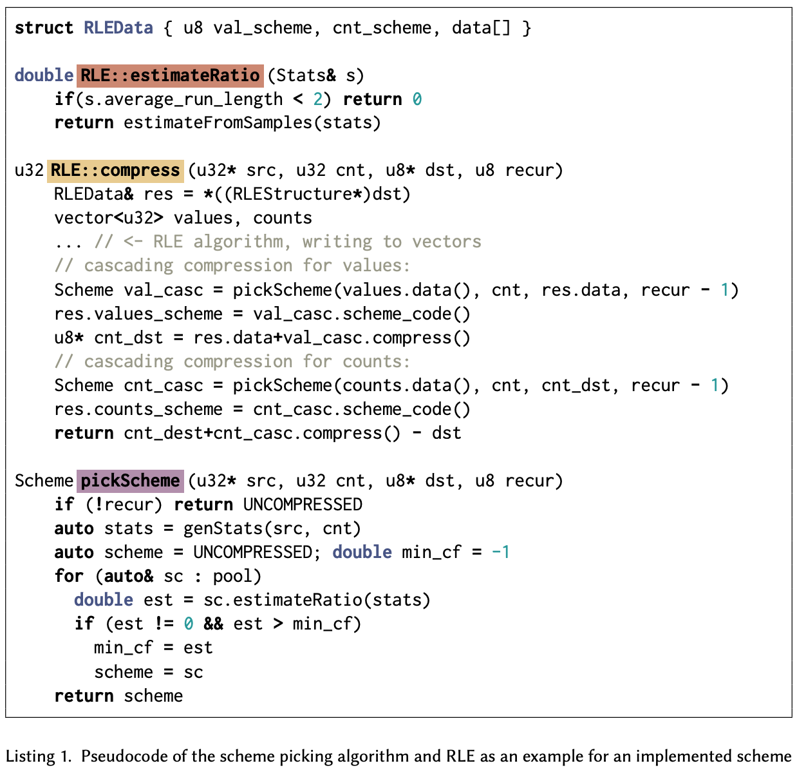

<!DOCTYPE html>
<html><head><title>(논문) BtrBlocks - Efficient Columnar Compression for Data Lakes (3. Scheme selection and compression)</title><meta charSet="utf-8"/><meta name="viewport" content="width=device-width, initial-scale=1.0"/><meta property="og:title" content="(논문) BtrBlocks - Efficient Columnar Compression for Data Lakes (3. Scheme selection and compression)"/><meta property="og:description" content="본 글은 논문 BtrBlocks - Efficient Columnar Compression for Data Lakes (SIGMOD &amp;#039;23) 를 읽고 정리한 글입니다. 별도의 명시가 없는 한, 본 글의 모든 그림은 위 논문에서 가져왔습니다. 목차 - 진짜 너무 길어서 section 별로 식물을 쪼갰습니다."/><meta property="og:image" content="https://mdg.haeramk.im/static/og-image.png"/><meta property="og:width" content="1200"/><meta property="og:height" content="675"/><link rel="icon" href="../../../../../static/icon.png"/><meta name="description" content="본 글은 논문 BtrBlocks - Efficient Columnar Compression for Data Lakes (SIGMOD &amp;#039;23) 를 읽고 정리한 글입니다. 별도의 명시가 없는 한, 본 글의 모든 그림은 위 논문에서 가져왔습니다. 목차 - 진짜 너무 길어서 section 별로 식물을 쪼갰습니다."/><meta name="generator" content="Quartz"/><link rel="preconnect" href="https://fonts.googleapis.com"/><link rel="preconnect" href="https://fonts.gstatic.com"/><link href="../../../../../index.css" rel="stylesheet" type="text/css" spa-preserve/><link href="https://cdn.jsdelivr.net/npm/katex@0.16.0/dist/katex.min.css" rel="stylesheet" type="text/css" spa-preserve/><link href="https://fonts.googleapis.com/css2?family=IBM Plex Mono&amp;family=Gowun Batang:wght@400;700&amp;family=Gowun Dodum:ital,wght@0,400;0,600;1,400;1,600&amp;display=swap" rel="stylesheet" type="text/css" spa-preserve/><script src="../../../../../prescript.js" type="application/javascript" spa-preserve></script><script type="application/javascript" spa-preserve>const fetchData = fetch(`../../../../../static/contentIndex.json`).then(data => data.json())</script></head><body data-slug="botanicals/database/encoding/papers/BtrBlocks---Efficient-Columnar-Compression-for-Data-Lakes/(논문)-BtrBlocks---Efficient-Columnar-Compression-for-Data-Lakes-(3.-Scheme-selection-and-compression)"><div id="quartz-root" class="page"><div id="quartz-body"><div class="left sidebar"><h1 class="page-title "><a href="../../../../..">Madison Digital Garden</a></h1><div class="spacer mobile-only"></div><div class="search "><div id="search-icon"><p>Search</p><div></div><svg tabIndex="0" aria-labelledby="title desc" role="img" xmlns="http://www.w3.org/2000/svg" viewBox="0 0 19.9 19.7"><title id="title">Search</title><desc id="desc">Search</desc><g class="search-path" fill="none"><path stroke-linecap="square" d="M18.5 18.3l-5.4-5.4"></path><circle cx="8" cy="8" r="7"></circle></g></svg></div><div id="search-container"><div id="search-space"><input autocomplete="off" id="search-bar" name="search" type="text" aria-label="Search for something" placeholder="Search for something"/><div id="results-container"></div></div></div></div><div class="darkmode "><input class="toggle" id="darkmode-toggle" type="checkbox" tabIndex="-1"/><label id="toggle-label-light" for="darkmode-toggle" tabIndex="-1"><svg xmlns="http://www.w3.org/2000/svg" xmlnsXlink="http://www.w3.org/1999/xlink" version="1.1" id="dayIcon" x="0px" y="0px" viewBox="0 0 35 35" style="enable-background:new 0 0 35 35;" xmlSpace="preserve"><title>Light mode</title><path d="M6,17.5C6,16.672,5.328,16,4.5,16h-3C0.672,16,0,16.672,0,17.5    S0.672,19,1.5,19h3C5.328,19,6,18.328,6,17.5z M7.5,26c-0.414,0-0.789,0.168-1.061,0.439l-2,2C4.168,28.711,4,29.086,4,29.5    C4,30.328,4.671,31,5.5,31c0.414,0,0.789-0.168,1.06-0.44l2-2C8.832,28.289,9,27.914,9,27.5C9,26.672,8.329,26,7.5,26z M17.5,6    C18.329,6,19,5.328,19,4.5v-3C19,0.672,18.329,0,17.5,0S16,0.672,16,1.5v3C16,5.328,16.671,6,17.5,6z M27.5,9    c0.414,0,0.789-0.168,1.06-0.439l2-2C30.832,6.289,31,5.914,31,5.5C31,4.672,30.329,4,29.5,4c-0.414,0-0.789,0.168-1.061,0.44    l-2,2C26.168,6.711,26,7.086,26,7.5C26,8.328,26.671,9,27.5,9z M6.439,8.561C6.711,8.832,7.086,9,7.5,9C8.328,9,9,8.328,9,7.5    c0-0.414-0.168-0.789-0.439-1.061l-2-2C6.289,4.168,5.914,4,5.5,4C4.672,4,4,4.672,4,5.5c0,0.414,0.168,0.789,0.439,1.06    L6.439,8.561z M33.5,16h-3c-0.828,0-1.5,0.672-1.5,1.5s0.672,1.5,1.5,1.5h3c0.828,0,1.5-0.672,1.5-1.5S34.328,16,33.5,16z     M28.561,26.439C28.289,26.168,27.914,26,27.5,26c-0.828,0-1.5,0.672-1.5,1.5c0,0.414,0.168,0.789,0.439,1.06l2,2    C28.711,30.832,29.086,31,29.5,31c0.828,0,1.5-0.672,1.5-1.5c0-0.414-0.168-0.789-0.439-1.061L28.561,26.439z M17.5,29    c-0.829,0-1.5,0.672-1.5,1.5v3c0,0.828,0.671,1.5,1.5,1.5s1.5-0.672,1.5-1.5v-3C19,29.672,18.329,29,17.5,29z M17.5,7    C11.71,7,7,11.71,7,17.5S11.71,28,17.5,28S28,23.29,28,17.5S23.29,7,17.5,7z M17.5,25c-4.136,0-7.5-3.364-7.5-7.5    c0-4.136,3.364-7.5,7.5-7.5c4.136,0,7.5,3.364,7.5,7.5C25,21.636,21.636,25,17.5,25z"></path></svg></label><label id="toggle-label-dark" for="darkmode-toggle" tabIndex="-1"><svg xmlns="http://www.w3.org/2000/svg" xmlnsXlink="http://www.w3.org/1999/xlink" version="1.1" id="nightIcon" x="0px" y="0px" viewBox="0 0 100 100" style="enable-background='new 0 0 100 100'" xmlSpace="preserve"><title>Dark mode</title><path d="M96.76,66.458c-0.853-0.852-2.15-1.064-3.23-0.534c-6.063,2.991-12.858,4.571-19.655,4.571  C62.022,70.495,50.88,65.88,42.5,57.5C29.043,44.043,25.658,23.536,34.076,6.47c0.532-1.08,0.318-2.379-0.534-3.23  c-0.851-0.852-2.15-1.064-3.23-0.534c-4.918,2.427-9.375,5.619-13.246,9.491c-9.447,9.447-14.65,22.008-14.65,35.369  c0,13.36,5.203,25.921,14.65,35.368s22.008,14.65,35.368,14.65c13.361,0,25.921-5.203,35.369-14.65  c3.872-3.871,7.064-8.328,9.491-13.246C97.826,68.608,97.611,67.309,96.76,66.458z"></path></svg></label></div></div><div class="center"><div class="page-header"><div class="popover-hint"><h1 class="article-title ">(논문) BtrBlocks - Efficient Columnar Compression for Data Lakes (3. Scheme selection and compression)</h1><p class="content-meta ">Jul 17, 2024, 15 min read</p><ul class="tags "><li><a href="../../../../../tags/database" class="internal tag-link">#database</a></li><li><a href="../../../../../tags/논문" class="internal tag-link">#논문</a></li></ul></div></div><article class="popover-hint"><blockquote class="callout" data-callout="info">
<div class="callout-title">
                  <div class="callout-icon"><svg xmlns="http://www.w3.org/2000/svg" width="100%" height="100%" viewBox="0 0 24 24" fill="none" stroke="currentColor" stroke-width="2" stroke-linecap="round" stroke-linejoin="round"><circle cx="12" cy="12" r="10"></circle><line x1="12" y1="16" x2="12" y2="12"></line><line x1="12" y1="8" x2="12.01" y2="8"></line></svg></div>
                  <div class="callout-title-inner"><p>본 글은 논문 <a href="https://dl.acm.org/doi/10.1145/3589263" class="external">BtrBlocks - Efficient Columnar Compression for Data Lakes (SIGMOD '23)</a> 를 읽고 정리한 글입니다.</p></div>
                  
                </div>
</blockquote>
<blockquote class="callout" data-callout="info">
<div class="callout-title">
                  <div class="callout-icon"><svg xmlns="http://www.w3.org/2000/svg" width="100%" height="100%" viewBox="0 0 24 24" fill="none" stroke="currentColor" stroke-width="2" stroke-linecap="round" stroke-linejoin="round"><circle cx="12" cy="12" r="10"></circle><line x1="12" y1="16" x2="12" y2="12"></line><line x1="12" y1="8" x2="12.01" y2="8"></line></svg></div>
                  <div class="callout-title-inner"><p>별도의 명시가 없는 한, 본 글의 모든 그림은 위 논문에서 가져왔습니다. </p></div>
                  
                </div>
</blockquote>
<blockquote class="callout is-collapsible is-collapsed" data-callout="info" data-callout-fold>
<div class="callout-title">
                  <div class="callout-icon"><svg xmlns="http://www.w3.org/2000/svg" width="100%" height="100%" viewBox="0 0 24 24" fill="none" stroke="currentColor" stroke-width="2" stroke-linecap="round" stroke-linejoin="round"><circle cx="12" cy="12" r="10"></circle><line x1="12" y1="16" x2="12" y2="12"></line><line x1="12" y1="8" x2="12.01" y2="8"></line></svg></div>
                  <div class="callout-title-inner"><p>목차 - 진짜 너무 길어서 section 별로 식물을 쪼갰습니다. </p></div>
                  <svg xmlns="http://www.w3.org/2000/svg" width="24" height="24" viewBox="0 0 24 24" fill="none" stroke="currentColor" stroke-width="2" stroke-linecap="round" stroke-linejoin="round" class="fold">
                  <polyline points="6 9 12 15 18 9"></polyline>
                </svg>
                </div>
<ul>
<li><a href="../../../../../botanicals/database/encoding/papers/BtrBlocks---Efficient-Columnar-Compression-for-Data-Lakes/(논문)-BtrBlocks---Efficient-Columnar-Compression-for-Data-Lakes-(1.-Abstract,-Intro)" class="internal" data-slug="botanicals/database/encoding/papers/BtrBlocks---Efficient-Columnar-Compression-for-Data-Lakes/(논문)-BtrBlocks---Efficient-Columnar-Compression-for-Data-Lakes-(1.-Abstract,-Intro)">1. Abstract, Intro</a></li>
<li><a href="../../../../../botanicals/database/encoding/papers/BtrBlocks---Efficient-Columnar-Compression-for-Data-Lakes/(논문)-BtrBlocks---Efficient-Columnar-Compression-for-Data-Lakes-(2.-Background)" class="internal" data-slug="botanicals/database/encoding/papers/BtrBlocks---Efficient-Columnar-Compression-for-Data-Lakes/(논문)-BtrBlocks---Efficient-Columnar-Compression-for-Data-Lakes-(2.-Background)">2. Background</a></li>
<li><a href="../../../../../botanicals/database/encoding/papers/BtrBlocks---Efficient-Columnar-Compression-for-Data-Lakes/(논문)-BtrBlocks---Efficient-Columnar-Compression-for-Data-Lakes-(3.-Scheme-selection-and-compression)" class="internal" data-slug="botanicals/database/encoding/papers/BtrBlocks---Efficient-Columnar-Compression-for-Data-Lakes/(논문)-BtrBlocks---Efficient-Columnar-Compression-for-Data-Lakes-(3.-Scheme-selection-and-compression)">3. Scheme selection and compression (현재 글)</a></li>
<li><a href="../../../../../botanicals/database/encoding/papers/BtrBlocks---Efficient-Columnar-Compression-for-Data-Lakes/(논문)-BtrBlocks---Efficient-Columnar-Compression-for-Data-Lakes-(4.-Pseudodecimal-encoding)" class="internal" data-slug="botanicals/database/encoding/papers/BtrBlocks---Efficient-Columnar-Compression-for-Data-Lakes/(논문)-BtrBlocks---Efficient-Columnar-Compression-for-Data-Lakes-(4.-Pseudodecimal-encoding)">4. Pseudodecimal encoding</a></li>
<li><a href="../../../../../botanicals/database/encoding/papers/BtrBlocks---Efficient-Columnar-Compression-for-Data-Lakes/(논문)-BtrBlocks---Efficient-Columnar-Compression-for-Data-Lakes-(5.-Fast-decompression)" class="internal" data-slug="botanicals/database/encoding/papers/BtrBlocks---Efficient-Columnar-Compression-for-Data-Lakes/(논문)-BtrBlocks---Efficient-Columnar-Compression-for-Data-Lakes-(5.-Fast-decompression)">5. Fast decompression</a></li>
<li><a href="../../../../../botanicals/database/encoding/papers/BtrBlocks---Efficient-Columnar-Compression-for-Data-Lakes/(논문)-BtrBlocks---Efficient-Columnar-Compression-for-Data-Lakes-(6.-Evaluation)" class="internal" data-slug="botanicals/database/encoding/papers/BtrBlocks---Efficient-Columnar-Compression-for-Data-Lakes/(논문)-BtrBlocks---Efficient-Columnar-Compression-for-Data-Lakes-(6.-Evaluation)">6. Evaluation</a></li>
<li><a href="../../../../../botanicals/database/encoding/papers/BtrBlocks---Efficient-Columnar-Compression-for-Data-Lakes/(논문)-BtrBlocks---Efficient-Columnar-Compression-for-Data-Lakes-(7.-Related-work-and-conclusion)" class="internal" data-slug="botanicals/database/encoding/papers/BtrBlocks---Efficient-Columnar-Compression-for-Data-Lakes/(논문)-BtrBlocks---Efficient-Columnar-Compression-for-Data-Lakes-(7.-Related-work-and-conclusion)">7. Related work and conclusion</a></li>
</ul>
</blockquote>
<h2 id="3-scheme-selection--compression">3. Scheme Selection &amp; Compression<a aria-hidden="true" tabindex="-1" href="#3-scheme-selection--compression" class="internal"> §</a></h2>
<h4 id="30-overview">3.0. <em>Overview</em><a aria-hidden="true" tabindex="-1" href="#30-overview" class="internal"> §</a></h4>
<blockquote class="callout" data-callout="tip">
<div class="callout-title">
                  <div class="callout-icon"><svg xmlns="http://www.w3.org/2000/svg" width="100%" height="100%" viewBox="0 0 24 24" fill="none" stroke="currentColor" stroke-width="2" stroke-linecap="round" stroke-linejoin="round"><path d="M8.5 14.5A2.5 2.5 0 0 0 11 12c0-1.38-.5-2-1-3-1.072-2.143-.224-4.054 2-6 .5 2.5 2 4.9 4 6.5 2 1.6 3 3.5 3 5.5a7 7 0 1 1-14 0c0-1.153.433-2.294 1-3a2.5 2.5 0 0 0 2.5 2.5z"></path></svg></div>
                  <div class="callout-title-inner"><p>Tip <a href="#30-overview" class="internal">Section 3.0</a> Overview</p></div>
                  
                </div>
<ul>
<li>… 는 논문에는 없는 section 이고, 형식상 주인장이 끼워 넣은 것이다.</li>
</ul>
</blockquote>
<h4 id="301-scheme-selection-algorithms">3.0.1 Scheme selection algorithms.<a aria-hidden="true" tabindex="-1" href="#301-scheme-selection-algorithms" class="internal"> §</a></h4>
<ul>
<li>Data 에 맞는 compression scheme 을 고르는 알고리즘은 당연히 중요하다.
<ul>
<li>각 compression scheme 은 대상으로 하는 자료형도 다르고, 어떤 data distribution 에 대해 효율적인지 등의 특성이 다르기 때문.</li>
</ul>
</li>
<li>하지만 지금까지의 data format 들은 다소 정확하지 않은 방법으로 알고리즘을 선택해 왔다.
<ul>
<li>가령 맨날 비교만 당하는 Parquet 의 경우에는, 문자열의 경우에는 무조건 <a href="../../../../../botanicals/database/encoding/papers/BtrBlocks---Efficient-Columnar-Compression-for-Data-Lakes/(논문)-BtrBlocks---Efficient-Columnar-Compression-for-Data-Lakes-(2.-Background)#223-dictionary" class="internal" data-slug="botanicals/database/encoding/papers/BtrBlocks---Efficient-Columnar-Compression-for-Data-Lakes/(논문)-BtrBlocks---Efficient-Columnar-Compression-for-Data-Lakes-(2.-Background)">Dictionary</a> 을 사용하고 정수의 경우에는 무조건 <a href="../../../../../botanicals/database/encoding/papers/BtrBlocks---Efficient-Columnar-Compression-for-Data-Lakes/(논문)-BtrBlocks---Efficient-Columnar-Compression-for-Data-Lakes-(2.-Background)#225-for--bit-packing" class="internal" data-slug="botanicals/database/encoding/papers/BtrBlocks---Efficient-Columnar-Compression-for-Data-Lakes/(논문)-BtrBlocks---Efficient-Columnar-Compression-for-Data-Lakes-(2.-Background)">Bit-packing</a> 을 사용하는 등의 단순하고 static 한 방식을 사용했다.
<ul>
<li>하지만 예상하듯이 이러한 방식은 데이터를 최대로 압축하지 못한다.</li>
</ul>
</li>
<li>다른 방식은 통계를 이용하는 것이다. 가령 <a href="https://dl.acm.org/doi/10.1145/2882903.2882925" class="external">Data Block 형식</a> 의 경우에는 <span class="math math-inline"><span class="katex"><span class="katex-html" aria-hidden="true"><span class="base"><span class="strut" style="height:1em;vertical-align:-0.25em;"></span><span class="mord mathnormal">min</span><span class="mopen">(</span><span class="mclose">)</span></span></span></span></span>, <span class="math math-inline"><span class="katex"><span class="katex-html" aria-hidden="true"><span class="base"><span class="strut" style="height:1em;vertical-align:-0.25em;"></span><span class="mord mathnormal">ma</span><span class="mord mathnormal">x</span><span class="mopen">(</span><span class="mclose">)</span></span></span></span></span>, <span class="math math-inline"><span class="katex"><span class="katex-html" aria-hidden="true"><span class="base"><span class="strut" style="height:1em;vertical-align:-0.25em;"></span><span class="mord mathnormal">u</span><span class="mord mathnormal">ni</span><span class="mord mathnormal" style="margin-right:0.03588em;">q</span><span class="mord mathnormal">u</span><span class="mord mathnormal">e</span><span class="mopen">(</span><span class="mclose">)</span></span></span></span></span> 정도의 통계 연산으로 세 알고리즘 (<a href="../../../../../botanicals/database/encoding/papers/BtrBlocks---Efficient-Columnar-Compression-for-Data-Lakes/(논문)-BtrBlocks---Efficient-Columnar-Compression-for-Data-Lakes-(2.-Background)#225-for--bit-packing" class="internal" data-slug="botanicals/database/encoding/papers/BtrBlocks---Efficient-Columnar-Compression-for-Data-Lakes/(논문)-BtrBlocks---Efficient-Columnar-Compression-for-Data-Lakes-(2.-Background)">FOR</a>, <a href="../../../../../botanicals/database/encoding/papers/BtrBlocks---Efficient-Columnar-Compression-for-Data-Lakes/(논문)-BtrBlocks---Efficient-Columnar-Compression-for-Data-Lakes-(2.-Background)#223-dictionary" class="internal" data-slug="botanicals/database/encoding/papers/BtrBlocks---Efficient-Columnar-Compression-for-Data-Lakes/(논문)-BtrBlocks---Efficient-Columnar-Compression-for-Data-Lakes-(2.-Background)">Dictionary</a>, <a href="../../../../../botanicals/database/encoding/papers/BtrBlocks---Efficient-Columnar-Compression-for-Data-Lakes/(논문)-BtrBlocks---Efficient-Columnar-Compression-for-Data-Lakes-(2.-Background)#222-rle--one-value" class="internal" data-slug="botanicals/database/encoding/papers/BtrBlocks---Efficient-Columnar-Compression-for-Data-Lakes/(논문)-BtrBlocks---Efficient-Columnar-Compression-for-Data-Lakes-(2.-Background)">Single Value</a>) 중 하나를 선택했다.</li>
</ul>
</li>
<li>하지만 더 복잡한 encoding 방식까지 사용하기 위해서는, 더 범용적인 선택 알고리즘이 필요할 것이고, 이렇게 해야만 데이터를 더 꽉꽉 눌러담을 수 있을 것이다.</li>
</ul>
<h4 id="302-challenges">3.0.2. Challenges<a aria-hidden="true" tabindex="-1" href="#302-challenges" class="internal"> §</a></h4>
<ul>
<li>따라서 저자들은 올바른 scheme 을 선택하기 위한 방법으로 데이터에서 sample 을 추출하는 방식 (<em>Sampling</em>) 을 채택했다.</li>
<li>하지만 이 sample 을 추출하는 것은 생각보다 쉽지 않다; Compression scheme 과 관련된 데이터의 특성이 잘 드러나도록 sample 을 추출해야 하기 때문.
<ul>
<li>가령 random 하게 값들을 추출하는 경우에는 연속된 값들이 추출되지 않아, <a href="../../../../../botanicals/database/encoding/papers/BtrBlocks---Efficient-Columnar-Compression-for-Data-Lakes/(논문)-BtrBlocks---Efficient-Columnar-Compression-for-Data-Lakes-(2.-Background)#222-rle--one-value" class="internal" data-slug="botanicals/database/encoding/papers/BtrBlocks---Efficient-Columnar-Compression-for-Data-Lakes/(논문)-BtrBlocks---Efficient-Columnar-Compression-for-Data-Lakes-(2.-Background)">RLE</a> 를 사용할 수 있는지 없는지가 샘플을 통해서는 알 수 없다.</li>
<li>또는 첫 <span class="math math-inline"><span class="katex"><span class="katex-html" aria-hidden="true"><span class="base"><span class="strut" style="height:0.6833em;"></span><span class="mord mathnormal" style="margin-right:0.07153em;">K</span></span></span></span></span> 개의 값들을 샘플로 고르는 방식 또한 아주 편향된 샘플일 수 있기에 올바르지 않다.</li>
</ul>
</li>
<li>Scheme selection algorithm 을 개발하는 데에는 이 샘플 추출의 어려움 외에도 어떻게 Cascading 이 가능하게 할까 또한 난관이었다고 한다. 이것에 대해선 <a href="#32-cascading" class="internal">Section 3.2</a> 에서 살펴보자.</li>
</ul>
<h4 id="303-solution-overview">3.0.3. Solution Overview<a aria-hidden="true" tabindex="-1" href="#303-solution-overview" class="internal"> §</a></h4>
<ul>
<li>기본적인 BtrBlock 의 sample-based selection 의 아이디어는 block 에 대해 sample 을 추출해 그것을 compression 하여 compression scheme 선택을 위한 힌트를 얻는 것이다.</li>
<li>다음과 같은 5단계를 반복적으로 수행하며 compression 을 진행한다고 한다.
<ol>
<li>Block 에 대한 statistics 를 계산한다.</li>
<li>이 statistics 를 이용해, 몇가지 compression scheme 들을 걸러낸다.</li>
<li>Sample 을 추출하고, 이 sample 에 대해 남은 compression scheme 을 적용해 compression ratio 을 확인한다.</li>
<li>Sample 에 대해 compression ratio 가 가장 높은 놈을 이용해, 전체 block 에 대해 압축을 진행한다.</li>
<li>만일 압축의 결과가 cascading 이 가능하다면, (1) 으로 되돌아가 반복한다.</li>
</ol>
</li>
</ul>
<h3 id="31-estimating-compression-ratio-with-samples">3.1. Estimating Compression Ratio with Samples<a aria-hidden="true" tabindex="-1" href="#31-estimating-compression-ratio-with-samples" class="internal"> §</a></h3>
<h4 id="311-choosing-samples">3.1.1. Choosing samples.<a aria-hidden="true" tabindex="-1" href="#311-choosing-samples" class="internal"> §</a></h4>
<ul>
<li>샘플을 추출하는 데에는 <em>Spatial locality</em> 와 “Unique 한 값들이 얼마나 포진해 있는지” 간에 trade-off 가 있다.
<ul>
<li>즉, block 의 연속된 일부 구간을 추출한다면 이 “연속된 데이터의 특성” 을 더 잘 반영하는 반면, block 내에 흩뿌려져 있는 unique 한 값들은 추출될 가능성이 낮아진다.</li>
</ul>
</li>
</ul>
<blockquote class="callout" data-callout="tip">
<div class="callout-title">
                  <div class="callout-icon"><svg xmlns="http://www.w3.org/2000/svg" width="100%" height="100%" viewBox="0 0 24 24" fill="none" stroke="currentColor" stroke-width="2" stroke-linecap="round" stroke-linejoin="round"><path d="M8.5 14.5A2.5 2.5 0 0 0 11 12c0-1.38-.5-2-1-3-1.072-2.143-.224-4.054 2-6 .5 2.5 2 4.9 4 6.5 2 1.6 3 3.5 3 5.5a7 7 0 1 1-14 0c0-1.153.433-2.294 1-3a2.5 2.5 0 0 0 2.5 2.5z"></path></svg></div>
                  <div class="callout-title-inner"><p>Tip <em>Spatial Locality</em> 란?</p></div>
                  
                </div>
<ul>
<li>논문에서 등장하는 <em>Spatial Locality</em> 는 cache replacement algorithm 에서의 그것과는 사뭇 다른 말이다.</li>
<li>여기서의 <em>Spatial Locality</em> 는 “연속된 데이터로 부터 알아낼 수 있는 특성” 정도로 이해하면 된다.</li>
<li>가령 위의 <a href="../../../../../botanicals/database/encoding/papers/BtrBlocks---Efficient-Columnar-Compression-for-Data-Lakes/(논문)-BtrBlocks---Efficient-Columnar-Compression-for-Data-Lakes-(2.-Background)#222-rle--one-value" class="internal" data-slug="botanicals/database/encoding/papers/BtrBlocks---Efficient-Columnar-Compression-for-Data-Lakes/(논문)-BtrBlocks---Efficient-Columnar-Compression-for-Data-Lakes-(2.-Background)">RLE</a> 의 경우에는 어떤 값이 얼마나 연속적으로 등장하냐를 이용한 것이기 때문에, RLE 를 사용할 수 있는지 판단하기 위해서는 이 <em>Spatial Locality</em> 를 확인해야만 하는 것이다.</li>
</ul>
</blockquote>
<ul>
<li>또한 그렇다고 샘플의 크기를 늘려버리게 되면, 샘플을 compression 하는 것에만 overhead 가 너무 커질 수도 있다.</li>
<li>따라서 BtrBlock 에서는 샘플의 크기를 작게 유지하면서 trade-off 를 절충하기 위해, “연속된 공간을 무작위로 추출하기” 의 방법을 사용한다.</li>
<li>BtrBlock 에서 샘플을 추출하는 구체적인 방법은 다음과 같다:</li>
</ul>
<p></p>
<ul>
<li>일단 전체 block 을 몇개의 <em>Partition</em> 으로 나눈 후, 각 <em>Partition</em> 의 random offset 부터 일정 개수의 연속된 값들을 추출하고 합치는 식으로 샘플을 만든다.
<ul>
<li>기본적으로는 6400 개의 entry 를 하나의 <em>Partition</em> 으로 묶어 총 10개의 <em>Partition</em> 을 만든다. (하나의 block 에는 64,000 개의 entry 가 들어가기 때문)</li>
<li>그리고 각 <em>Partition</em> 에서는 64개의 연속된 entry 를 랜덤한 위치에서 추출한다.</li>
<li>이렇게 해서 block 사이즈 대비 1/100 사이즈의 샘플이 완성된다.</li>
</ul>
</li>
<li>이 방식이 진짜 좋을까? 이것에 관해서는 뒤의 evaluation 파트에서 설명될 것이다.</li>
</ul>
<h4 id="312-estimating-compression-ratio">3.1.2. Estimating compression ratio.<a aria-hidden="true" tabindex="-1" href="#312-estimating-compression-ratio" class="internal"> §</a></h4>
<ul>
<li>위에서 말한 것 처럼, 샘플을 추출하기 전에 우선 몇가지 통계를 내어 compression scheme 을 몇개 걸러낸다.</li>
<li>일단 여기서 구하는 통계는 대략 다음의 네가지 이다:
<ol>
<li>최소값</li>
<li>최대값</li>
<li>Unique value 의 개수</li>
<li>평균 run length - 즉, 하나의 값이 연속적으로 등장하는 횟수의 평균</li>
</ol>
</li>
<li>이 통계를 이용해 compression scheme 을 거르는 것은 그냥 heuristic 을 사용한다.
<ul>
<li>가령, “평균 run length” 가 2 보다 작으면 <a href="../../../../../botanicals/database/encoding/papers/BtrBlocks---Efficient-Columnar-Compression-for-Data-Lakes/(논문)-BtrBlocks---Efficient-Columnar-Compression-for-Data-Lakes-(2.-Background)#222-rle--one-value" class="internal" data-slug="botanicals/database/encoding/papers/BtrBlocks---Efficient-Columnar-Compression-for-Data-Lakes/(논문)-BtrBlocks---Efficient-Columnar-Compression-for-Data-Lakes-(2.-Background)">RLE</a> 는 후보에서 제외되고,</li>
<li>“Unique value 의 개수” 가 전체의 50% 을 넘으면 <a href="../../../../../botanicals/database/encoding/papers/BtrBlocks---Efficient-Columnar-Compression-for-Data-Lakes/(논문)-BtrBlocks---Efficient-Columnar-Compression-for-Data-Lakes-(2.-Background)#224-frequency" class="internal" data-slug="botanicals/database/encoding/papers/BtrBlocks---Efficient-Columnar-Compression-for-Data-Lakes/(논문)-BtrBlocks---Efficient-Columnar-Compression-for-Data-Lakes-(2.-Background)">Frequency Encoding</a> 이 제외된다.</li>
</ul>
</li>
</ul>
<h4 id="313-performance">3.1.3. Performance.<a aria-hidden="true" tabindex="-1" href="#313-performance" class="internal"> §</a></h4>
<ul>
<li>이 방식이 효율적이려면 다음의 두 가지를 실제로 보여야 한다:
<ol>
<li>우선 이 방법이 lightweight 해야 한다.</li>
<li>또한 이 방법이 accurate 해야 한다 - 즉, 이 방법으로 예측한 compression scheme 이 실제로 다른 compression scheme 을 이용했을 때 보다 compression ratio 가 높아야 한다.</li>
</ol>
</li>
<li>Evaluation 결과, 전체 compression 과정 중 이 selection 과정은 1.2% 만의 비중을 차지했고, accuracy 도 높았다고 한다. 더 자세한 것은 뒤에서 확인하자.</li>
</ul>
<h3 id="32-cascading">3.2. Cascading<a aria-hidden="true" tabindex="-1" href="#32-cascading" class="internal"> §</a></h3>
<h4 id="321-recursive-application-of-schemes">3.2.1. Recursive application of schemes.<a aria-hidden="true" tabindex="-1" href="#321-recursive-application-of-schemes" class="internal"> §</a></h4>
<ul>
<li>한 scheme 을 적용하고 난 뒤에 어떤 scheme 을 적용할 수 있는가에 대한 decision tree 는 다음과 같다:</li>
</ul>
<p></p>
<ul>
<li>우선, 색깔이 중허다.
<ul>
<li>“녹색” 은 recursion step 을 뜻한다. 즉, output 으로 나온 leaf node 과 같은 자료형의 input (root node) 로 recursive 하게 처리될 수 있다는 것.</li>
<li>“파란색” 은 compression scheme 을 뜻한다. 이 scheme 을 고르는 것은 위에서 설명한 <a href="#31-estimating-compression-ratio-with-samples" class="internal">scheme selection</a> 을 이용한다.</li>
<li>“회색” 은 recursion end 를 뜻한다. 이 node 에 대해서는 더 이상 recursion 이 불가능하다는 것.</li>
</ul>
</li>
<li>그럼 recursion 진사 갈비를 무한으로 즐길 수 있느냐; 그렇지는 않다.
<ul>
<li>최대 몇번까지 recursion 할지는 static configuration 으로 설정하게끔 되어 있고, 그 이후의 recursion 은 이루어지지 않는다.</li>
<li>왜냐면 recursion 을 계속 하면 물론 ratio 는 높아지겠지만 compression 이 너무 오래걸리기 때문.</li>
<li>기본값으로는 3번만 recursion 하도록 설정되어 있다.</li>
</ul>
</li>
<li>각 recursion 을 거치면서 적용 순서 또한 저장을 해 decompression 에 사용될 수 있게끔 한다.</li>
</ul>
<h4 id="322-cascading-compression-example">3.2.2. Cascading compression example.<a aria-hidden="true" tabindex="-1" href="#322-cascading-compression-example" class="internal"> §</a></h4>
<ul>
<li><a href="https://www.youtube.com/@%EC%96%B4%ED%8D%BC%EC%BB%B7" class="external">여기,</a> 뭉게질 위기에 처한 실수 (double) 값이 있습니다.</li>
</ul>
<pre><code>[3.5, 3.5, 18, 18, 3.5, 3.5]
</code></pre>
<ul>
<li>이때 scheme selection 에 의해 <a href="../../../../../botanicals/database/encoding/papers/BtrBlocks---Efficient-Columnar-Compression-for-Data-Lakes/(논문)-BtrBlocks---Efficient-Columnar-Compression-for-Data-Lakes-(2.-Background)#222-rle--one-value" class="internal" data-slug="botanicals/database/encoding/papers/BtrBlocks---Efficient-Columnar-Compression-for-Data-Lakes/(논문)-BtrBlocks---Efficient-Columnar-Compression-for-Data-Lakes-(2.-Background)">RLE</a> 가 선택되었다고 가정해 보자.</li>
<li>그럼 다음과 같이 결과가 나올 것이다.
<ul>
<li>첫번째 배열은 run value 이고, 두번째 배열은 run count 이다.</li>
</ul>
</li>
</ul>
<pre><code>[3.5, 18, 3.5]
[2, 2, 2]
</code></pre>
<ul>
<li>여기에 대해서는 또 scheme selection 를 돌려 value 에 대해서는 <a href="../../../../../botanicals/database/encoding/papers/BtrBlocks---Efficient-Columnar-Compression-for-Data-Lakes/(논문)-BtrBlocks---Efficient-Columnar-Compression-for-Data-Lakes-(2.-Background)#223-dictionary" class="internal" data-slug="botanicals/database/encoding/papers/BtrBlocks---Efficient-Columnar-Compression-for-Data-Lakes/(논문)-BtrBlocks---Efficient-Columnar-Compression-for-Data-Lakes-(2.-Background)">Dictionary</a> 가 선택되고, count 에 대해서는 <a href="../../../../../botanicals/database/encoding/papers/BtrBlocks---Efficient-Columnar-Compression-for-Data-Lakes/(논문)-BtrBlocks---Efficient-Columnar-Compression-for-Data-Lakes-(2.-Background)#222-rle--one-value" class="internal" data-slug="botanicals/database/encoding/papers/BtrBlocks---Efficient-Columnar-Compression-for-Data-Lakes/(논문)-BtrBlocks---Efficient-Columnar-Compression-for-Data-Lakes-(2.-Background)">One Value</a> 가 선택되었다고 해보자.</li>
<li>그럼 다음처럼 된다.
<ul>
<li>첫번째는 dictionary index, 두번째는 dictionary, 세번째는 one value 이다.</li>
</ul>
</li>
</ul>
<pre><code>[0, 1, 0]
[3.5, 18]
2
</code></pre>
<ul>
<li>마지막 recursion 에서는 첫번째 배열에 <a href="../../../../../botanicals/database/encoding/papers/BtrBlocks---Efficient-Columnar-Compression-for-Data-Lakes/(논문)-BtrBlocks---Efficient-Columnar-Compression-for-Data-Lakes-(2.-Background)#225-for--bit-packing" class="internal" data-slug="botanicals/database/encoding/papers/BtrBlocks---Efficient-Columnar-Compression-for-Data-Lakes/(논문)-BtrBlocks---Efficient-Columnar-Compression-for-Data-Lakes-(2.-Background)">FOR &amp; Bit-packing</a> 을 도입해서 첫번째 배열을 1bit 으로 표현하는 등의 작업을 거칠 수 있을 것이다.</li>
</ul>
<h4 id="323-code-example">3.2.3. Code example.<a aria-hidden="true" tabindex="-1" href="#323-code-example" class="internal"> §</a></h4>
<p></p>
<ul>
<li>위의 pseudocode 는 <a href="../../../../../botanicals/database/encoding/papers/BtrBlocks---Efficient-Columnar-Compression-for-Data-Lakes/(논문)-BtrBlocks---Efficient-Columnar-Compression-for-Data-Lakes-(2.-Background)#222-rle--one-value" class="internal" data-slug="botanicals/database/encoding/papers/BtrBlocks---Efficient-Columnar-Compression-for-Data-Lakes/(논문)-BtrBlocks---Efficient-Columnar-Compression-for-Data-Lakes-(2.-Background)">RLE</a> 를 cascading 하는 예시이다.</li>
<li><code>compress()</code> 부터 따라가 보자.
<ul>
<li>일단 <code>res</code> 는 결과를 저장하는 객체의 포인터이고, <code>value</code> 와 <code>count</code> 는 RLE 의 결과물이 저장되는 배열이다.
<ul>
<li>여기서 <code>value</code>, <code>count</code> 는 알아서 적당히 RLE 로직을 통해 계산된다고 가정한다.</li>
</ul>
</li>
<li>그 다음에는 <code>value</code> 와 <code>count</code> 각각에 대해 <code>pickScheme()</code> 으로 scheme 을 정해서, 그것으로 전체 데이터를 재귀적으로 compress 하는것으로 마무리 된다.</li>
</ul>
</li>
<li>이때, <code>pickScheme</code> 은 다음처럼 작동한다:
<ul>
<li><code>pool</code> 은 가능한 전체 scheme 들이 담겨있는 곳이고, 여기를 iterate 하며 각각의 scheme 에 대해 <code>estimateRatio()</code> 로 compression ratio 를 계산한다.</li>
<li>그리고 ratio 가 가장 큰 scheme 을 반환하게 된다.</li>
</ul>
</li>
<li>마지막으로, 이 <code>estimateRatio()</code> 는 다음과 같다:
<ul>
<li>일단 인자로 받은 <code>stat</code> 으로 해당 scheme 을 사용할 수 있는지 확인한다.
<ul>
<li>위 코드에서는 RLE 이기 때문에 average run length 가 2 이상인지 확인하는 heuristic 으로 검사한다.</li>
</ul>
</li>
<li>위 확인작업이 끝나면, sample 에 대해 compression 하여 compression ratio 를 계산해 반환한다.</li>
</ul>
</li>
</ul>
<h4 id="324-the-encoding-scheme-pool">3.2.4. The encoding scheme pool.<a aria-hidden="true" tabindex="-1" href="#324-the-encoding-scheme-pool" class="internal"> §</a></h4>
<ul>
<li><a href="#321-recursive-application-of-schemes" class="internal">Section 3.2.1</a> 에 소개한 scheme pool 은 public BI dataset 을 이용해 선택되었다고 한다.</li>
<li>다음의 과정을 거쳐서 선택되었다:
<ol>
<li>BI dataset 에서 compression ratio 가 (Bzip2 와 같은) 무거운 scheme <sup><a href="#user-content-fn-heavyweight-scheme" id="user-content-fnref-heavyweight-scheme" data-footnote-ref aria-describedby="footnote-label" class="internal">1</a></sup> 에 비해 더 안좋은 column 을 찾는다.</li>
<li>해당 column 의 데이터들의 특성을 분석한다.</li>
<li>해당 특성과 잘 맞는 compression scheme 을 도입하고</li>
<li>Compression ratio 가 높지 않거나 decompression overhead 가 큰 scheme 은 제외한다.</li>
</ol>
</li>
<li>위와 같은 과정을 통해 multi-level cascading 이 가능하고 확장성이 좋은 scheme pool 을 만들수 있었다고 한다.</li>
<li>이 pool 에 들어갈 scheme 을 고르는 것은 BtrBlock 성능 전체에 영향을 미치기에, 아주 중요하다.
<ul>
<li>가령 scheme 을 pool 에 너무 많이 추가하면 sample evaluation 에 너무나 많은 시간이 소요되지만 compression ratio 는 늘어나는 장단점이 있고,</li>
<li>Compression ratio 가 높지만 decompression overhead 가 큰 scheme 의 경우에도 마찬가지의 장단점이 있기 때문.</li>
</ul>
</li>
</ul>
<section data-footnotes class="footnotes"><h2 class="sr-only" id="footnote-label">Footnotes<a aria-hidden="true" tabindex="-1" href="#footnote-label" class="internal"> §</a></h2>
<ol>
<li id="user-content-fn-heavyweight-scheme">
<p>여기 “무거운 (heavyweight)” 이 어떤 측면에서 말하는 것인지는 확실하지 않다. 만약 compression ratio 가 일반적으로 낮은 scheme 을 지칭하는 것이라면 일리가 있으나 decompression overhead 가 안좋은 것을 지칭하는 것이라면 decompression overhead 와 compression ratio 모두 좋은 scheme 을 새로 찾아야 하는 것인데, 쉽지는 않았을 듯. 근데 문맥상으로 보면 후자인 것 같다. <a href="#user-content-fnref-heavyweight-scheme" data-footnote-backref class="data-footnote-backref internal" aria-label="Back to content">↩</a></p>
</li>
</ol>
</section></article></div><div class="right sidebar"><div class="graph "><h3>Graph View</h3><div class="graph-outer"><div id="graph-container" data-cfg="{&quot;drag&quot;:true,&quot;zoom&quot;:true,&quot;depth&quot;:1,&quot;scale&quot;:1.1,&quot;repelForce&quot;:0.5,&quot;centerForce&quot;:0.3,&quot;linkDistance&quot;:30,&quot;fontSize&quot;:0.6,&quot;opacityScale&quot;:1,&quot;showTags&quot;:true,&quot;removeTags&quot;:[]}"></div><svg version="1.1" id="global-graph-icon" xmlns="http://www.w3.org/2000/svg" xmlnsXlink="http://www.w3.org/1999/xlink" x="0px" y="0px" viewBox="0 0 55 55" fill="currentColor" xmlSpace="preserve"><path d="M49,0c-3.309,0-6,2.691-6,6c0,1.035,0.263,2.009,0.726,2.86l-9.829,9.829C32.542,17.634,30.846,17,29,17
	s-3.542,0.634-4.898,1.688l-7.669-7.669C16.785,10.424,17,9.74,17,9c0-2.206-1.794-4-4-4S9,6.794,9,9s1.794,4,4,4
	c0.74,0,1.424-0.215,2.019-0.567l7.669,7.669C21.634,21.458,21,23.154,21,25s0.634,3.542,1.688,4.897L10.024,42.562
	C8.958,41.595,7.549,41,6,41c-3.309,0-6,2.691-6,6s2.691,6,6,6s6-2.691,6-6c0-1.035-0.263-2.009-0.726-2.86l12.829-12.829
	c1.106,0.86,2.44,1.436,3.898,1.619v10.16c-2.833,0.478-5,2.942-5,5.91c0,3.309,2.691,6,6,6s6-2.691,6-6c0-2.967-2.167-5.431-5-5.91
	v-10.16c1.458-0.183,2.792-0.759,3.898-1.619l7.669,7.669C41.215,39.576,41,40.26,41,41c0,2.206,1.794,4,4,4s4-1.794,4-4
	s-1.794-4-4-4c-0.74,0-1.424,0.215-2.019,0.567l-7.669-7.669C36.366,28.542,37,26.846,37,25s-0.634-3.542-1.688-4.897l9.665-9.665
	C46.042,11.405,47.451,12,49,12c3.309,0,6-2.691,6-6S52.309,0,49,0z M11,9c0-1.103,0.897-2,2-2s2,0.897,2,2s-0.897,2-2,2
	S11,10.103,11,9z M6,51c-2.206,0-4-1.794-4-4s1.794-4,4-4s4,1.794,4,4S8.206,51,6,51z M33,49c0,2.206-1.794,4-4,4s-4-1.794-4-4
	s1.794-4,4-4S33,46.794,33,49z M29,31c-3.309,0-6-2.691-6-6s2.691-6,6-6s6,2.691,6,6S32.309,31,29,31z M47,41c0,1.103-0.897,2-2,2
	s-2-0.897-2-2s0.897-2,2-2S47,39.897,47,41z M49,10c-2.206,0-4-1.794-4-4s1.794-4,4-4s4,1.794,4,4S51.206,10,49,10z"></path></svg></div><div id="global-graph-outer"><div id="global-graph-container" data-cfg="{&quot;drag&quot;:true,&quot;zoom&quot;:true,&quot;depth&quot;:-1,&quot;scale&quot;:0.9,&quot;repelForce&quot;:0.5,&quot;centerForce&quot;:0.3,&quot;linkDistance&quot;:30,&quot;fontSize&quot;:0.6,&quot;opacityScale&quot;:1,&quot;showTags&quot;:true,&quot;removeTags&quot;:[]}"></div></div></div><div class="toc desktop-only"><button type="button" id="toc"><h3>Table of Contents</h3><svg xmlns="http://www.w3.org/2000/svg" width="24" height="24" viewBox="0 0 24 24" fill="none" stroke="currentColor" stroke-width="2" stroke-linecap="round" stroke-linejoin="round" class="fold"><polyline points="6 9 12 15 18 9"></polyline></svg></button><div id="toc-content"><ul class="overflow"><li class="depth-0"><a href="#3-scheme-selection--compression" data-for="3-scheme-selection--compression">3. Scheme Selection &amp; Compression</a></li><li class="depth-1"><a href="#31-estimating-compression-ratio-with-samples" data-for="31-estimating-compression-ratio-with-samples">3.1. Estimating Compression Ratio with Samples</a></li><li class="depth-1"><a href="#32-cascading" data-for="32-cascading">3.2. Cascading</a></li></ul></div></div><div class="backlinks "><h3>Backlinks</h3><ul class="overflow"><li><a href="../../../../../botanicals/database/(Botanical-Garden)-Database" class="internal">(Botanical Garden) Database</a></li><li><a href="../../../../../botanicals/database/encoding/papers/BtrBlocks---Efficient-Columnar-Compression-for-Data-Lakes/(논문)-BtrBlocks---Efficient-Columnar-Compression-for-Data-Lakes-(1.-Abstract,-Intro)" class="internal">(논문) BtrBlocks - Efficient Columnar Compression for Data Lakes (1. Abstract, Intro)</a></li><li><a href="../../../../../botanicals/database/encoding/papers/BtrBlocks---Efficient-Columnar-Compression-for-Data-Lakes/(논문)-BtrBlocks---Efficient-Columnar-Compression-for-Data-Lakes-(2.-Background)" class="internal">(논문) BtrBlocks - Efficient Columnar Compression for Data Lakes (2. Background)</a></li><li><a href="../../../../../botanicals/database/encoding/papers/BtrBlocks---Efficient-Columnar-Compression-for-Data-Lakes/(논문)-BtrBlocks---Efficient-Columnar-Compression-for-Data-Lakes-(3.-Scheme-selection-and-compression)" class="internal">(논문) BtrBlocks - Efficient Columnar Compression for Data Lakes (3. Scheme selection and compression)</a></li><li><a href="../../../../../botanicals/database/encoding/papers/BtrBlocks---Efficient-Columnar-Compression-for-Data-Lakes/(논문)-BtrBlocks---Efficient-Columnar-Compression-for-Data-Lakes-(4.-Pseudodecimal-encoding)" class="internal">(논문) BtrBlocks - Efficient Columnar Compression for Data Lakes (4. Pseudodecimal encoding)</a></li><li><a href="../../../../../botanicals/database/encoding/papers/BtrBlocks---Efficient-Columnar-Compression-for-Data-Lakes/(논문)-BtrBlocks---Efficient-Columnar-Compression-for-Data-Lakes-(5.-Fast-decompression)" class="internal">(논문) BtrBlocks - Efficient Columnar Compression for Data Lakes (5. Fast decompression)</a></li><li><a href="../../../../../botanicals/database/encoding/papers/BtrBlocks---Efficient-Columnar-Compression-for-Data-Lakes/(논문)-BtrBlocks---Efficient-Columnar-Compression-for-Data-Lakes-(6.-Evaluation)" class="internal">(논문) BtrBlocks - Efficient Columnar Compression for Data Lakes (6. Evaluation)</a></li><li><a href="../../../../../botanicals/database/encoding/papers/BtrBlocks---Efficient-Columnar-Compression-for-Data-Lakes/(논문)-BtrBlocks---Efficient-Columnar-Compression-for-Data-Lakes-(7.-Related-work-and-conclusion)" class="internal">(논문) BtrBlocks - Efficient Columnar Compression for Data Lakes (7. Related work and conclusion)</a></li></ul></div></div></div><footer class><hr/><p>Created with <a href="https://quartz.jzhao.xyz/">Quartz v4.1.0</a>, © 2024</p><ul><li><a href="https://github.com/haeramkeem">GitHub</a></li><li><a href="www.linkedin.com/in/haeram-kim-277404220">LinkedIn</a></li><li><a href="mailto:haeram.kim1@gmail.com">Email</a></li></ul></footer></div></body><script type="application/javascript">// quartz/components/scripts/quartz/components/scripts/callout.inline.ts
function toggleCallout() {
  const outerBlock = this.parentElement;
  outerBlock.classList.toggle(`is-collapsed`);
  const collapsed = outerBlock.classList.contains(`is-collapsed`);
  const height = collapsed ? this.scrollHeight : outerBlock.scrollHeight;
  outerBlock.style.maxHeight = height + `px`;
  let current = outerBlock;
  let parent = outerBlock.parentElement;
  while (parent) {
    if (!parent.classList.contains(`callout`)) {
      return;
    }
    const collapsed2 = parent.classList.contains(`is-collapsed`);
    const height2 = collapsed2 ? parent.scrollHeight : parent.scrollHeight + current.scrollHeight;
    parent.style.maxHeight = height2 + `px`;
    current = parent;
    parent = parent.parentElement;
  }
}
function setupCallout() {
  const collapsible = document.getElementsByClassName(
    `callout is-collapsible`
  );
  for (const div of collapsible) {
    const title = div.firstElementChild;
    if (title) {
      title.removeEventListener(`click`, toggleCallout);
      title.addEventListener(`click`, toggleCallout);
      const collapsed = div.classList.contains(`is-collapsed`);
      const height = collapsed ? title.scrollHeight : div.scrollHeight;
      div.style.maxHeight = height + `px`;
    }
  }
}
document.addEventListener(`nav`, setupCallout);
window.addEventListener(`resize`, setupCallout);
</script><script type="module">
          import mermaid from 'https://cdn.jsdelivr.net/npm/mermaid/dist/mermaid.esm.min.mjs';
          const darkMode = document.documentElement.getAttribute('saved-theme') === 'dark'
          mermaid.initialize({
            startOnLoad: false,
            securityLevel: 'loose',
            theme: darkMode ? 'dark' : 'default'
          });
          document.addEventListener('nav', async () => {
            await mermaid.run({
              querySelector: '.mermaid'
            })
          });
          </script><script src="https://cdn.jsdelivr.net/npm/katex@0.16.7/dist/contrib/copy-tex.min.js" type="application/javascript"></script><script src="https://www.googletagmanager.com/gtag/js?id=G-N68CCP1QHG" type="application/javascript"></script><script src="../../../../../postscript.js" type="module"></script></html>